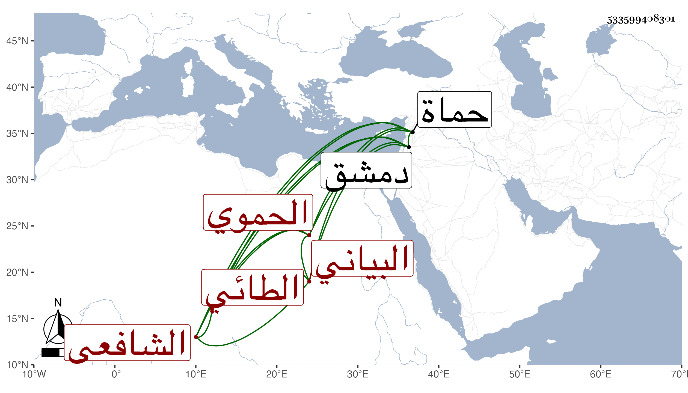

0902Sakhawi.DawLamic.ITO20230111-ara1.EIS1600.533599408301
Biography ID: 533599408301
994
محمد بن أحمد بن أبي بكر بن محمد الشمس الطائي البياني الحموي الشافعي ويعرف بابن الأشقر . ولد سنة سبع وستين وسبعمائة وقيل سبعين والأول أثبت بحماة ونشأ بها فحفظ القرآن والحاوي وأخذ عن الجمال يوسف بن خطيب المنصورية وقرأ عليه الصحيح والتمس منه الإذن له بقراءته على العامة فأشار باستئذان العلاء القضامي أيضا في ذلك للأمن من معارضته بعد ، قال : فتوجهت إليه فاختبرني بثلاثة أماكن من مشكلات الصحيح وهي المساجد التي على الطريق وحديث أم زرع والتفسير قال : ففتح الله بالمرور الحسن فيها وكان ذلك سببا لإذنه أيضا ، وسمع بدمشق بعض الصحيحين مع ثلاثيات البخاري على عائشة ابنة ابن عبد الهادي ، وحدث سمع منه الفضلاء كالجمال بن السابق وأفادني ترجمته والنجم بن فهد وناصر الدين بن زريق وكان لقيه في سنة سبع وثلاثين بل كتب عنه شيخنا وناهيك بهذا . ورأيت من سمى جده إبراهيم بن أبي بكر فالله أعلم وكان إنسانا حسنا زاهدا عابدا منعزلا عن بني الدنيا مستحضرا لكثير من الفقه كثير التلاوة معظما في بلده مشارا إليه بمشيختها . مات في ثامن عشري أو رابع عشري شوال سنة خمسين رحمه الله وإيانا .
